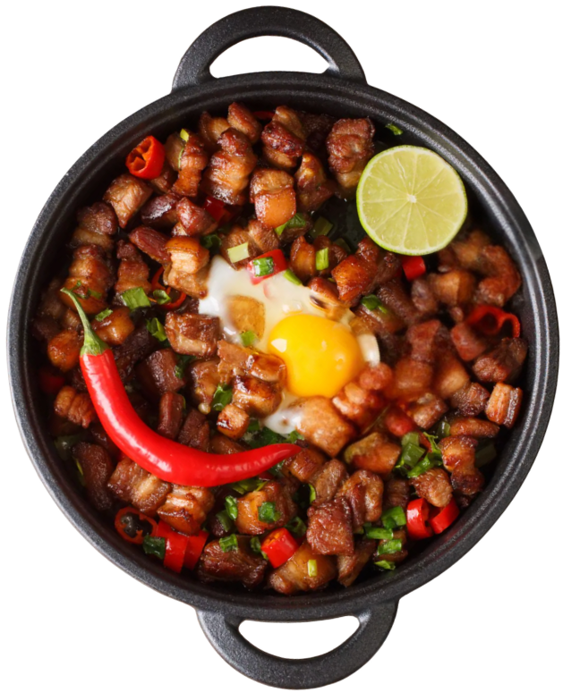

Famous Kapampangan Sisig
Kapampangan sisig is a beloved Filipino dish that originated in Pampanga, known as the culinary capital of the Philippines. Traditionally made from finely chopped pig’s head and chicken liver, it is seasoned with calamansi, onions, and chili peppers, creating a savory, tangy, slightly spicy dish with a rich and crispy texture. Often served sizzling on a hot plate, Kapampangan sisig is a flavorful example of Pampanga’s resourceful and distinctive culinary tradition.

Ingredients
- Pig's Face (Ears, Snout, Cheeks): 1 kg
- Chicken Liver: 250g
- Red Onion: 1 piece medium-sized, finely diced
- Siling Labuyo: 3-5 pieces
- Fresh Calamansi: 5-6 pieces, squeezed or juiced
- Rock Salt: Adjust to taste:
- Crushed Black Pepper: 1 tsp
- Egg: 1 raw egg, cracked on a sizzling plate (Optional, traditional Kapampangan Sisig contains no egg)
- Cooking Oil